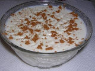
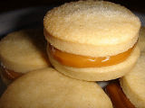
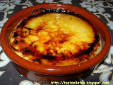
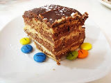
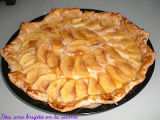

En un bol se prepara la crema para el tiramisú: se mezcla el queso mascarpone con las yemas de huevo y el azúcar. Aparte, se baten las claras de huevo a punto de nieve. Finalmente, se incorporan las claras al bol del mascarpone. Se bate con cuidado, con las varillas, realizando movimientos envolventes, para no perder el aire de las claras montadas, (como haciendo una mousse).
En una bandeja honda, montamos el postre, para ello, vamos colocando capas de bizcochos duros (soletilla) y los mojamos con café. Sobre una capa de bizcochos mojados en café, ponemos una capa de crema de mascarpone, después otra de bizcochos, otra de crema... etc. Sube los niveles que quieras, hasta terminar con una capa de crema.
Tamiza sobre la última capa un poco de chocolate amargo en polvo. El tiramisú es un postre que debe estar en la nevera unas horas.
In a bowl, prepare the cream for the tiramisu: mix the mascarpone cheese with the egg yolks and sugar. In a separate bowl, beat the egg whites until stiff. Finally, add the egg whites to the mascarpone bowl. Beat carefully, with the whisk, making encircling movements, so as not to lose the air in the egg whites (as if making a mousse). In a deep tray, we assemble the dessert, for it, we place layers of hard sponge cakes (soletilla) and we wet them with coffee. On a layer of sponge cakes soaked in coffee, put a layer of mascarpone cream, then another layer of sponge cakes, another layer of cream... etc. Go up as many levels as you want, until you finish with a layer of cream. Sift over the last layer a little bit of bitter chocolate powder. The tiramisu is a dessert that should be in the refrigerator for a few hours.
2 columnas
English

Arroz Con Leche
Ponemos a cocer la leche, con la ramita de canela, el azúcar y la piel de limón.
Lavamos el arroz con abundante agua fría para quitarle el almidón.
Cuando la leche cueza, añadimos el arroz y cocemos a fuego medio / bajo casi una hora, hasta que el arroz esté blando y la leche haya espesado lo suficiente (aquí se puede controlar por gustos, arroz con leche más espeso o más líquido), retiramos la corteza de limón y la canela en rama y servimos en cuencos, dejamos enfriar y espolvoreados por encima con canela en polvo.
Cook the milk with the cinnamon stick, the sugar and the lemon peel.
Wash the rice with plenty of cold water to remove the starch.
When the milk cooks, add the rice and cook over medium / low heat for almost an hour, until the rice is soft and the milk has thickened enough (here you can control by taste, thicker or more liquid rice pudding), remove the lemon peel and cinnamon stick and serve in bowls, let cool and sprinkled with cinnamon powder on top.
2 columnas
English

Dulce De Leche
Colocar todos los ingredientes en un recipiente grande, preferentemente de cobre o aluminio, a fuego fuerte, durante unas horas, hasta que tome color y comience a hervir.
Tener especial cuidado al romper el primer hervor, revolver y evitar que se derrame.
Dejar hervir espesar, bajar el fuego al mínimo revolviendo cada tanto
con una cuchara de madera.
Cuando al sacar un poquito en un plato, y dividirlo por la mitad con una cuchara, no se unen las partes, está hecho.
Al sacarlo del fuego, continuar revolviendo durante un rato hasta que pierda un poco de temperatura pues de lo contrario, se puede cortar. Al retirarlo del fuego, y mientras se revuelve, se puede apoyar el recipiente sobre agua fría para ayudar a entibiar más rápido
Place all the ingredients in a large container, preferably copper or aluminum, over high heat for a few hours, until it takes color and begins to boil.
Take special care when breaking the first boil, stir and avoid spillage.
Let it boil and thicken, lower the fire to the minimum stirring every now and then with a wooden spoon.
with a wooden spoon.
When when taking out a little bit in a plate, and dividing it in half with a spoon, the parts do not join, it is done.
When removing it from the fire, continue stirring it for a while until it loses a little temperature, otherwise, it can be cut. When removing it from the fire, and while stirring, you can rest the bowl over cold water to help it warm up faster.
2 columnas
English

Crema Catalana
Poner a fuego suave en una cazuela 2 tazas de leche. Batir en un bol las cuatro yemas de huevo, a los que se añaden 3 cucharadas de azúcar (reservando dos) y una cucharada de maizena. Remover con las barillas hasta conseguir una crema sin grumos.
Ésta mezcla se añade poco a poco a la leche, y subimos el fuego para hervir, durante 5 minutos sin dejar de mover.
La crema catalana se sirve en boles o platos individuales, a los cuales se les echa azúcar por encima y se quema para crear una costra de caramelo. Se sirve caliente.
Put 2 cups of milk in a saucepan over low heat. Beat the four egg yolks in a bowl, add 3 spoonfuls of sugar (reserving two) and a spoonful of cornstarch. Stir with the stirring rods until a cream without lumps is obtained.
This mixture is added little by little to the milk, and we raise the fire to boil, during 5 minutes without stopping moving.
The Catalan cream is served in bowls or individual dishes, which are sprinkled with sugar and burned to create a caramel crust. It is served hot.
2 columnas
English

Tarta De Chocolate
Preparamos un chocolate a la taza bien espeso: en una cazuela echamos un poco de agua y el chocolate de hacer, cuando se haya derretido, añadimos leche (reservando como un vaso y medio), seguimos removiendo hasta que cueza, luego aflojamos el fuego y continuamos removiendo y añadiendo colacao, hasta conseguir un chocolate muy espeso.
Dejamos enfriando (y espesando) el chocolate. Calentamos el resto de la leche y echamos un poco de cacao soluble.
Ahora solo hay que ir montando la tarta, mojando las galletas en la leche y colocándolas en el molde para hacer una base, después colocamos una capa de chocolate, otra de galletas
We prepare a very thick hot chocolate: in a saucepan we pour a little water and the chocolate to make, when it has melted, we add milk (reserving about a glass and a half), we continue stirring until it cooks, then we loosen the fire and we continue stirring and adding colacao, until we get a very thick chocolate.
Let the chocolate cool (and thicken). Heat the rest of the milk and add a little soluble cocoa.
Now we just have to assemble the cake, soaking the cookies in the milk and placing them in the mold to make a base, then we place a layer of chocolate, another of cookies and another of chocolate.
2 columnas
English

Tarta De Manzana
Sobre una bandeja de horno se coloca un papel para hornear (o se unta la bandeja del horno con mantequilla), colocamos el hojaldre doblado por los bordes a modo de caja, como de 1 ó 2 centímetros de alto, para contener la crema pastelera y dar forma a la tarta de manzana.
Preparamos una crema pastelera, con leche, canela, 4 yemas de huevo, 100 gr de azúcar glass y una cucharada de maizena. Poner en la cazuela la leche con la canela. Aparte, mezclar en un bol las yemas, el azúcar y la maizena. Cuando la leche vaya a hervir, añadir la mezcla de yemas del bol. Dejar cocer unos minutos a fuego lento sin dejar de remover hasta que espese.
Vertemos la masa pastelera sobre la masa de hojaldre que habíamos colocado en la bandeja. Pelamos y partimos las manzanas en finas rodajas y las vamos colocando por encima de la crema de la tarta hasta que quede totalmente cubierta.
Cubrimos con una fina capa de mermelada y horneamos a 180º durante 25 minutos aproximadamente.
Place a baking paper on a baking tray (or grease the baking tray with butter), place the puff pastry folded at the edges as a box, about 1 or 2 centimeters high, to contain the pastry cream and shape the apple tart.
Prepare a pastry cream, with milk, cinnamon, 4 egg yolks, 100 gr of powdered sugar and a spoonful of cornstarch. Put the milk with the cinnamon in the pan. Separately, mix the egg yolks, sugar and cornstarch in a bowl. When the milk is about to boil, add the yolk mixture from the bowl. Let it cook for a few minutes over low heat, stirring constantly until it thickens.
Pour the pastry dough over the puff pastry that we had placed on the tray. Peel and cut the apples into thin slices and place them on top of the pastry cream until it is completely covered.
Cover with a thin layer of jam and bake at 180º for approximately 25 minutes.